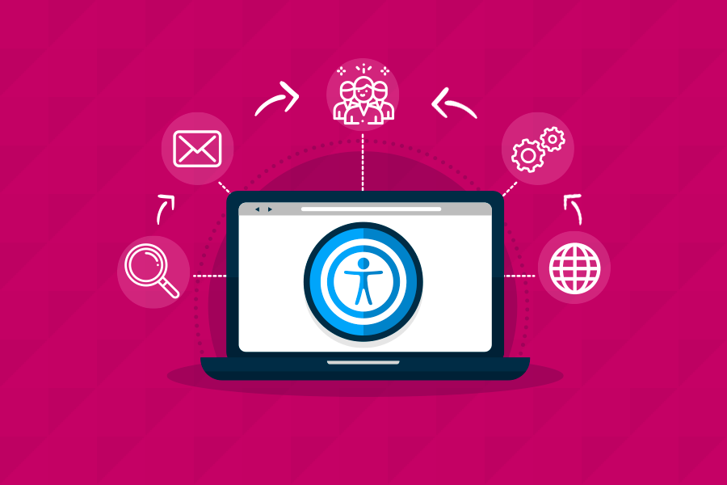

Tenha em mente que há pessoas com condições visuais como o daltonismo ou mesmo que não são capazes de
enxergar.
Por isso, não use indicações de cor como prioridade quando precisar transmitir um significado ou
mensagem.
Prefira o texto ou ícones com recursos de acessibilidade.
Atente inclusive para o contraste entre o texto e o fundo, para não dificultar a leitura.
Atualmente ouve-se falar muito em padrões web e acessibilidade entre os
desenvolvedores de
sites. Entretanto, o entendimento
que cada um traz desses conceitos é diverso e muitas vezes indefinido.
Os Padrões web sempre estão associados ao código da página web e
às recomendações do W3C especificadas para ele.
Para podermos desenvolver um site genuinamente de boa qualidade e
preparado para receber o extra de acessibilidade, os padrões
desenvolvidos em seu código devem abranger os seguintes itens:
Código html/xhtml e CSS válidos;
Separação em camadas: conteúdo, apresentação e comportamento.
Código (X)HTML semântico.
Para demonstrar a importância desses itens dos padrões web
para a acessibilidade de
sites, temos de especificar
para quem seja acessibilidade web, conceito culturalmente
só associado ao acesso de pessoas com deficiência visual.
“Para quem serve a acessibilidade?” é uma pergunta que
nos leva a várias questões e que nos ajudará a entender
a relação entre web standards
e acessibilidade. Podemos dividi-la em:
Com certeza o foco principal do desenvolvimento de sites
acessíveis é o acesso de pessoas com deficiência ao conteúdo
de informação e serviços prestados em um site. Entretanto,
criamos no Brasil uma cultura de que acessibilidade web
seria somente para pessoas com deficiência visual e, mais
ainda, especificamente para pessoas cegas.
Dessa forma, para alguns desenvolvedores, testar acessibilidade
de um site significava
quase que exclusivamente pedir a uma pessoa cega que
navegasse com seu
software de fala pela
página e desse o seu ok nela. Este é, sem dúvida, um dos
itens, entre inúmeros outros, da metodologia proposta pelo
W3C/WCAG para testarmos a acessibilidade de uma página.
No entanto, este item, isoladamente, acaba por incorrer
em inúmeros erros: nem todo o leitor de tela tem a mesma
qualidade e funciona da mesma forma, fazendo com que o
teste de uma pessoa cega não especializada possa ser somente
válido para o leitor de tela ou tecnologia assistiva que essa
pessoa utiliza.
Ao conhecermos as Diretrizes de Acessibilidade de Conteúdos Web
em suas duas versões, 1.0 e 2.0, percebemos a ênfase que os
itens de acessibilidade desses documentos dão aos acessos não
padronizados de pessoas que, em sua maioria, possuem deficiência,
como a deficiência visual, auditiva, cognitiva e motora. Nota-se, de pronto,
que as recomendações não se restringiram à deficiência visual
e nem mesmo a alguma tecnologia assistiva específica,
apesar de citá-las ao longo desses documentos.
Assim, por exemplo, ao destacarem os equivalentes textuais, o fizeram não só
como itens textuais alternativos para imagens (deficiência
visual), como também para sons (deficiência auditiva).
Esses itens combinados podem mesmo auxiliar, e muito,
o acesso de pessoas surdocegas, usuárias de display-braille.